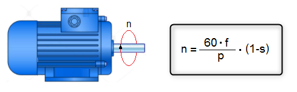

Recordem que la velocitat dels motors d'inducció asíncrons ve determinada per la següent expressió:

- n: velocitat de gir en r.p.m. del del rotor
- f: freqüència de la xarxa elèctrica en Hz
- p: nombre de parells de pols
- s: lliscament
Per tant, segons la fórmula anterior, es pot regular la velocitat (n) d'un motor asíncron modificant:
- p: el nombre de parell de pols
- f: la freqüència de la tensió elèctricaelèctricas
- s: el lliscament
Això dóna lloc als diferents sistemes de variació de la velocitat que s'analitzaran tot seguit.